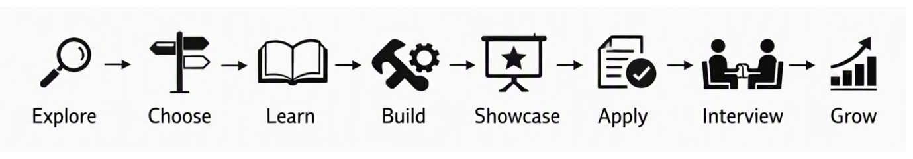

Embedded Systems Around Us
Where are Embedded Systems Used? How do you identify Embedded Systems around you?
OpenEmbedded Systems engineering offers diverse opportunities to build the firmware, hardware, and software that power real-world products. But where do you begin? What skills do you need, which career paths can you explore, and how do you prepare for your first opportunity?
This compass will help you explore Embedded system around us, understadn how they are built and learn about various roles in Embedded Engineering, understand the skills required for each role, Identify role that fits you and Guides you to build a roadmap to start your career with confidence.
Follow a step-by-step journey from exploring embedded career options to building practical skills and showcasing your work.

Turn your learning into opportunities, prepare for interviews, and grow into the embedded engineering role that fits you best.
Where are Embedded Systems Used? How do you identify Embedded Systems around you?
OpenHow are Embedded Systems Designed, Developed, and Deployed? What are the different stages of Embedded Product Development Lifecycle?
OpenWhat roles are required to build an Embedded system in Industry? What does each role do?
OpenWhat skills are required to get hired in Embedded Systems? How do you build these skills and showcase them to potential employers?
OpenHow do you choose a career path in Embedded Systems? How do you identify the skills required for your chosen path and build a roadmap to start your career?
OpenNow that you've explored the different career paths available ,the next step is to move from exploration to action. Choose a domain that interests you, identify the skills it requires, build your knowledge through hands-on practice and create projects that demonstrate what you can do. Your career path doesn't need to be decided all at once - start with one step and keep growing.
Have a question, found something unclear, or have a suggestion? Share it below.